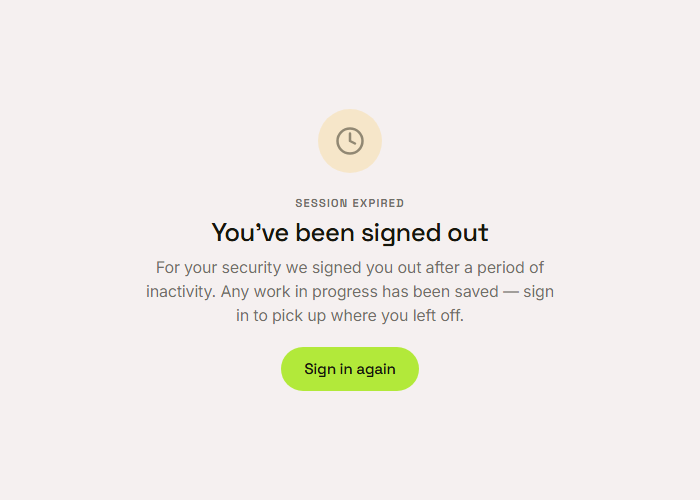
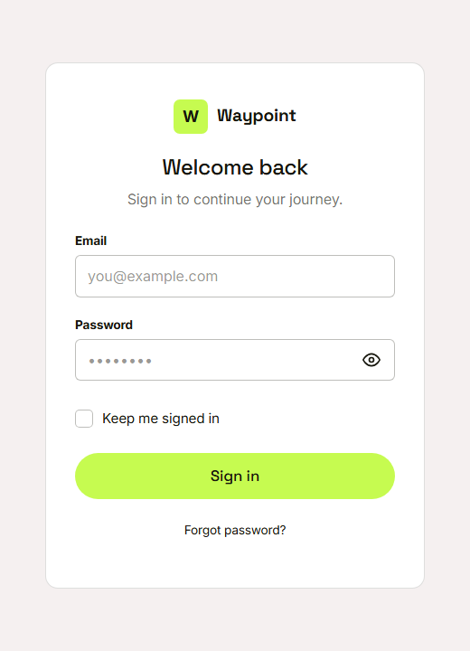

Waypoint · Video 010
Keeping a session safe
Short-lived keys, rotation and revocation
Two keys behind the scenes
 Signing in issues an access token and a refresh token
Signing in issues an access token and a refresh token
A reused token ends the session

Work in progress is saved
Sign out means sign out

Refresh tokens are cancelled straight away
In transit
- Production refuses connections that are not secure
- Security headers are set on responses
Things to remember
- The access token is short-lived
- The refresh token is rotated and stored scrambled
- A reused token ends the whole session family
- Signing out and changing a password cancel refresh tokens